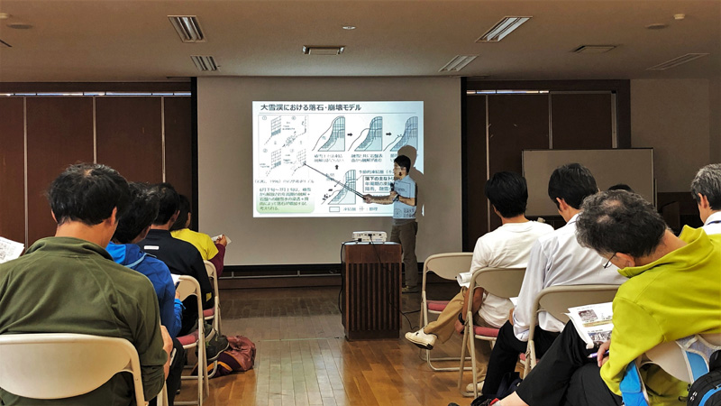
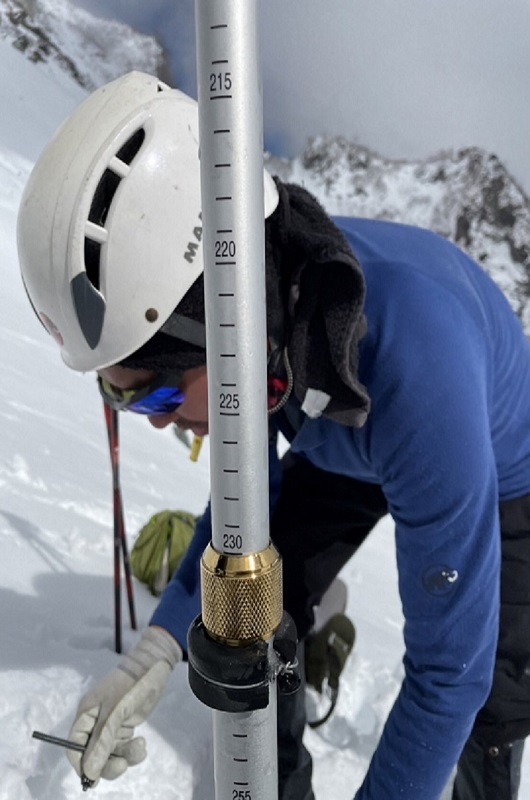

長野県白馬村・白馬大雪渓
年間1万人の登山者が通過する白馬大雪渓では，毎年のように落石や崩落などで登山事故が起きています．研究室では，大雪渓の両岩壁から生じる落石や崩落，雪渓崩落に関する調査をおこなっています．毎年7月頃に白馬村役場で山岳ガイドや山関係者を対象に研究成果の報告会を開催しています．大雪渓では，研究成果を生かした登山ルートが設定されています．


長野県白馬村・唐松沢氷河
2012年にはじめて飛騨山脈で氷河が発見され，現在まで7つの氷河が確認されています．2018年に白馬村のサポートにより，新潟大，立山カルデラ砂防博物館，白馬山案内人組合で氷河調査団が結成され，現地調査により唐松沢雪渓は七つ目の氷河と確認されました．現在，長野県と白馬村のサポートを受け白馬連山氷河調査団が結成され，白馬村にある他の雪渓が氷河であるかを調べています．

新潟県上越市・雁平地すべり
株式会社キタックとの共同研究として，上越市の雁平地区の地すべりの挙動を調べています．雁平地すべりの調査をもとに，現在，新潟県で滑動している地すべりの検出手法の開発に取り組んでいます．